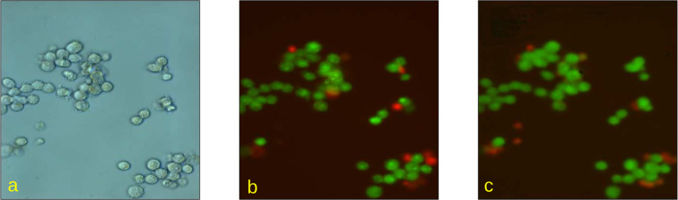
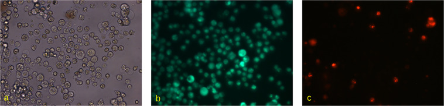
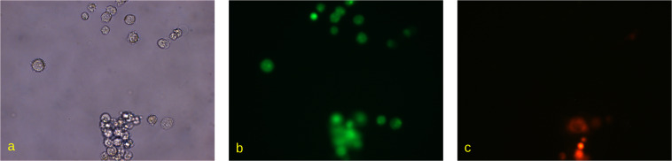
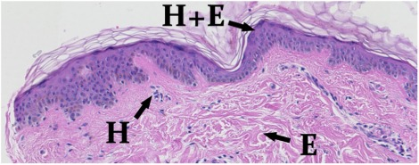
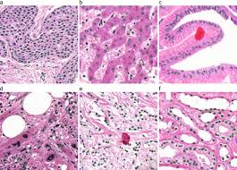

2 days to stain.
Minutes to
decide.

More cancer surgeries. Too few pathologists. The bottleneck is getting worse.
Every new biopsy and breast-conserving surgery adds to a pathology queue that already has too few specialists. Today, tissue still must be fixed, sectioned, chemically stained, and reviewed before a pathologist can assess whether the tumour margin is clear. That delay pushes critical decisions past the operating room.
The tissue is ready.
The pipeline isn't.
H&E Staining (Status Quo)
Gold standard for tissue assessment — but demands formalin fixation, paraffin embedding, microtome sectioning, and chemical staining. 24–72 hours minimum. Tissue is consumed and cannot be re-processed if the section quality fails.
IHC Add-on Staining
€3,000+ per case in reagent and lab cost layered on top of H&E. Required when H&E alone is ambiguous — meaning even more delay after the 2-day staining wait has already elapsed.
Manual Margin Assessment
A pathologist manually inspects the tumour–healthy tissue boundary under a microscope after staining. 20–40% of breast cancer surgeries require re-excision — a second operation — because the margin was called incorrectly the first time.
The opportunity
Unstained or fluorescent-stained tissue already encodes the structural information H&E reveals. We virtually generate the stain via pixel-level feature amplification and recolouring, then run AI margin classification — in minutes, intraoperatively.

Tissue in.
Clean margins out.
Pixels amplified.
Margins revealed.



Our current validated signal is a single F1 metric: 84%. That is approximately on par with the mean manual performance we observed across about seven surgeons reviewing the task.
We enter in 2026.
No new equipment.
Pathologist-ready software.
or on-prem
not replacement
Lower rework.
- High schooler interested at the intersection of healthcare x AI.

- High schooler interested in making a real impact.

- Epidemiologist interested in AI.

- Telemedicine platform founder
- Legal and regulatory counsel.

- Theranostics enthusiast interested in AI in precision medicine.
Promising model.
Limited data.
Clear next bottleneck.
The main drawback right now is dataset access. We are not limited by the idea; we are limited by how much clinically relevant paired data we can train and validate on.
We currently do not have enough paired unstained tissue and final H&E ground truth data. Because of that, the present model uses fluorescent dye input rather than full unstained-to-H&E staining, since fluorescent data is the only usable dataset currently available.
The proof of concept is directionally strong, but it still needs broader case diversity, scanner diversity, and pathology-reviewed labels before we can claim robust cross-site generalisation.
Before deployment, we need IRB-backed data collection, prospective validation, pathologist review, failure-mode analysis, and a documented regulatory pathway. This supports pathologists; it does not replace their judgment.
Partner first.
Build data.
Scale on cloud.
Use online cloud services early so the system is trainable, testable, and deployable beyond a local prototype.